Shuffle reader: from block locations to records
component index | Tracker worker | Block resolver
BlockStoreShuffleReader runs in the consuming executor JVM. A task asks for reduce partitions across map outputs, not all of a particular executor's files. The reader turns the block list into an interruptible iterator of key/value pairs or combiners. Neither the driver nor the YARN ResourceManager relays these bytes.
Flow at a glance
- Shuffle manager: Gives the reader block IDs and addresses for reduce partition 2.
- Block fetcher: Reads local blocks from disk or requests remote blocks from their servers.
- Shuffle reader: Decodes the bytes and yields records to the reduce task.
Key distinction: Reducer 2 needs only its slice from each map output. For attempt 41 that's shuffle_7_41_2, not the whole data file.
Show the animated flow

Who creates it, and what it receives
For the RDD API, ShuffledRDD.compute passes [split.index, split.index + 1) and a task metrics reporter to getReader. That overload requests all map indices. SQL's ShuffledRowRDD.compute can instead request several adjacent reducers, or just a range of map indices for one reducer; it consumes the value of each returned pair as an InternalRow.
For an ordinary blocking shuffle, SortShuffleManager.getReader first calls the tracker worker's getMapSizesByExecutorId. It then creates a reader with the dependency's handle, task context, metrics, and an iterator grouped by serving address. A tuple for shuffle 7 might be (ShuffleBlockId(7, 41, 2), estimatedBytes, 3): read reducer 2 of physical map output 41; 3 is the upstream logical map index for failure reporting. Obtaining this tuple transfers metadata, not the requested block.
How read() obtains bytes
Sequence diagram · Open full sizeText equivalent
sequenceDiagram
participant T as Reduce task
participant R as BlockStoreShuffleReader
participant F as ShuffleBlockFetcherIterator
participant B as Local BlockManager
participant S as Remote executor or external shuffle service
T->>R: read()
R->>F: Address groups, limits, stream wrapper, metrics
alt Same executor or eligible host-local disk
F->>B: getLocalBlockData or getHostLocalShuffleData
B-->>F: Managed buffer for file segment
else Remote block
F->>S: Open blocks through blockStoreClient
S-->>F: Stream handle
F->>S: Request chunks by stream ID
S-->>F: Shuffle bytes
end
F-->>R: Block ID and input stream
R-->>T: Iterator of decoded records or combiners
- The fetch iterator initializes by separating local, host-local and remote work. A block on this executor uses
getLocalBlockData. Another executor on this host can use a direct disk read when host-local reading is enabled and directory information can be obtained. A directory lookup is metadata I/O; the block bytes then come from local disk. Other blocks go to BlockStoreClient.fetchBlocks(host, port, execId, blockIds, listener, ...).
- Remote fetch is asynchronous. The iterator randomizes queued requests, tracks estimated bytes and requests in flight plus blocks per address, and defers requests when limits are reached. A first request may exceed the byte budget so a single large block can make progress. Above the fetch-to-memory threshold, the client streams a request to temporary disk rather than buffering it all in memory. A successful callback retains the buffer and enqueues it; the task thread takes the next result. Arrival order is not a key ordering.
- The reader wraps streams for configured compression/encryption, uses the dependency serializer's
asKeyValueIterator, and counts records. If there is key ordering, an external sorter sorts and may also aggregate. Without ordering, it merges combiners (partial aggregate values) when the map side already combined, combines values when only the reduce side aggregates, or passes the records through if there is no aggregator. Fetching several reducers does not automatically enable batch fetch: serializer, codec, protocol and encryption checks still apply.
Lifetime, retry, and diagnosis
There is no reader daemon or explicit stop call for the task to manage. Iterator exhaustion runs the completion callback; the fetcher also registers a task-completion listener, covering cancellation and failure. Cleanup marks the fetcher inactive, releases buffers, and deletes its registered download files. The producer's committed files are not reader scratch files.
The transport can retry outstanding blocks after eligible I/O failures without rerunning a map task. If a block still fails, the iterator throws a fetch failure with address, shuffle ID, map ID, map index and reduce ID. The driver can then resubmit stages and recompute missing outputs, subject to its retry policy. Failure to obtain the initial location list is a different path: see the tracker worker.
Diagnostic: Start with the reducer's Getting ... non-empty blocks log breakdown and its shuffle-read metrics. A task with mostly host-local blocks is not primarily reading over the network. High fetch wait alongside high remote bytes points to the producing host or transfer path; high spill after records arrive points instead to reduce-side aggregation or ordering. A failed address using the configured shuffle-service port points to the NodeManager auxiliary service, not the driver RPC endpoint.